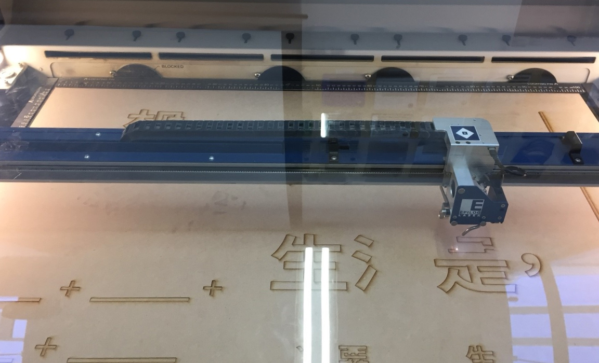

Co-Building Event
The First ‘Talking Wall - I Want My Future Life To Be’ in Taichung, Taiwan Date: 3rd November 2018 Location: Sec. 1, Jianguo S. Rd., South Dist., Taichung City 402, Taiwan
On 3rd November 2018, we held our first co-building event in Taiwan. The first wall is located in the legal graffiti area in the south district in Taichung. The co-building event is about sharing skills and perspectives into the real world.
Pre-Process Work
The pre-process work of the event includes collecting different future lives from London when the project holder was staying there. Considering the different personality or cultural background, the collected future lives can be inspirations of imagining the future life and provide a relaxing atmosphere of sharing, which is the intention of this co-reframing project.
After collecting, the topics which are going to be sprayed on the wall were hallowed on the wood boards by laser cutting machine.
On That Day
From 10:00 am to 17:00 pm, we have people who helped us from the beginning of the event, including cleaning the wall, painting it into black background together and spraying the topic hallowed on the wood boards on the wall. Since not everyone has been tried spraying on the wall, the process was exciting and full of fun.
Sharing Perspectives
There are various future lives from different people from different culture pre-collected from London and brought to Taiwan. After the wall was prepared, people who participated in can choose the pre-collected future life drawing that they are going to redraw on the wall. While people in Taiwan redrew the pre-collected future life drawing on the wall, the cross-cultural sharing was happening, even if people are still in different parts of the world.
We also shared the redrawn version of future lives back to the people in London, they feel surprised by the person who drew in Taiwan, for example, a South Korean girl whose original future life is surprised by Vitamin C who redrew hers on the wall and chose and coloured the future, especially the outlined dogs on the original version was coloured in to white cute poppies . ‘Wow, how did she know I like the white dogs!’ the South Korean girl said. The redrawing process in this stage can also be used as a warm-up for some people who have no confidence to draw their own.
Combination and Internalisation
After redrawing, people started to draw their future lives on the wall. It was amazing to see people who first have no idea what to draw started to draw, and some people cannot stop drawing. ‘I will take a walk to here and see the drawings again after today.’ some people who participated in said.
‘It is also obvious that many future lives of the young generation are different from mine and more abstract that I have to think more about it’ a middle-aged woman who participated in said.
‘It makes me feel surprised that there are still so many passionate people in Taiwan.’ When we were drawing, some people who lived nearby or passed also came here to read the words and take a look at the drawing on the wall. Some people also came twice. It was great to see the diversity shown and shared at that day, which also gives us the different perspectives of our society in Taiwan.